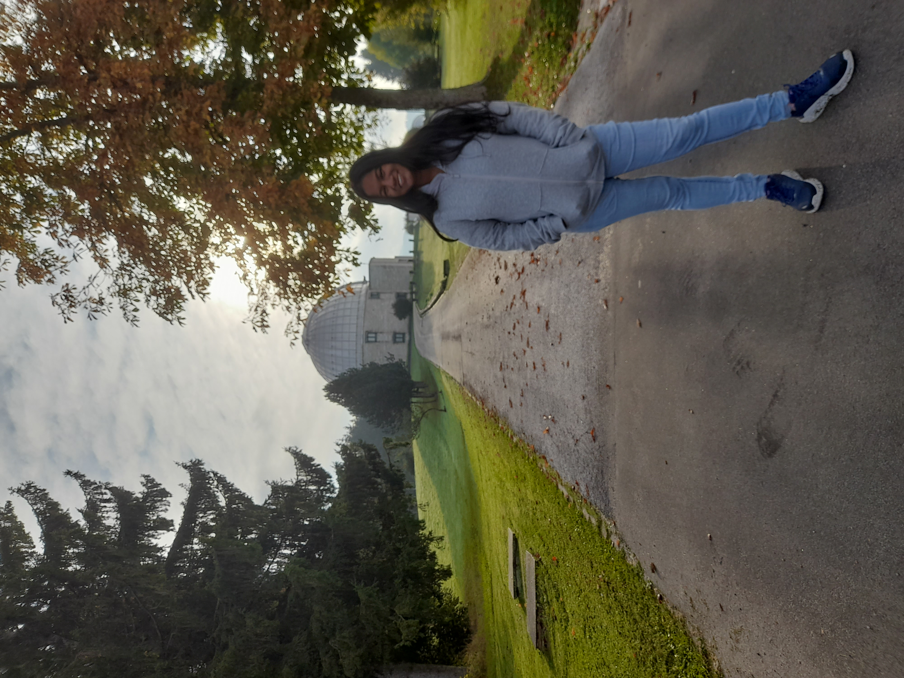
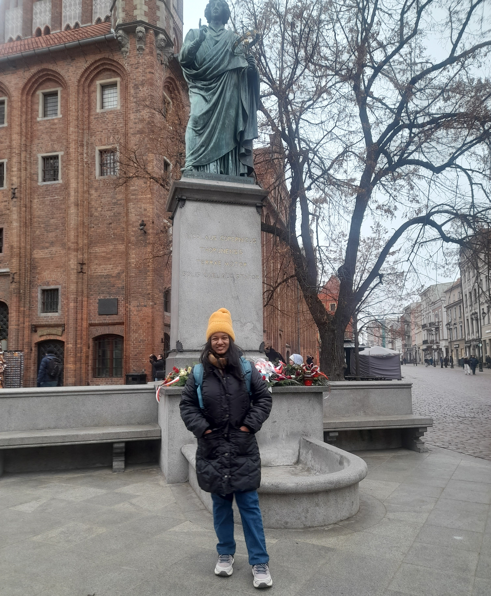
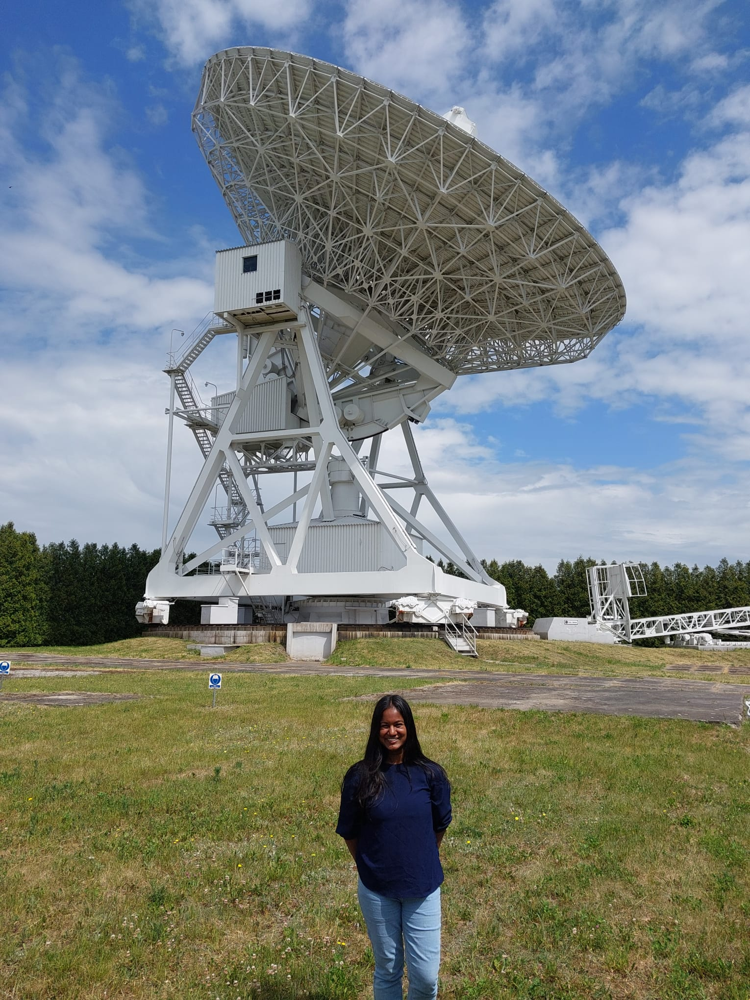
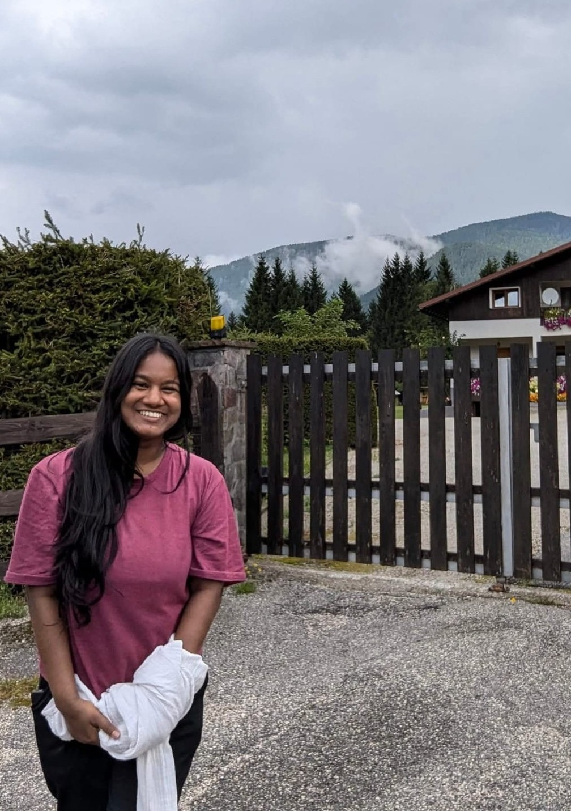

About Me
I completed my Master’s degree in Physics of Data at the University of Padua, Italy, with coursework in data science and astrophysics, and my B.Sc. (Hons) in Computational Physics at the University of Colombo, Sri Lanka.
I am deeply interested in astrophysics, particularly stellar evolution, and I am passionate about combining theoretical approaches with computational modelling to study astrophysical phenomena. My research interests lie at the intersection of astrophysics, numerical modelling, and scientific computing, with a focus on understanding the evolution of single and binary star systems through theory and computer simulations.
Apart from my academic interests, I enjoy spending my free time connecting with nature and the people around me. I enjoy reading books across a variety of genres, travelling to scenic destinations, and spending time exploring and appreciating nature whenever possible. I am always open to discussions that broaden my knowledge and offer me new perspectives on the world across different fields and disciplines.

At the Asiago Astrophysical Observatory, Italy, enjoying the observatory and the scenic nature

At the Nicolaus Copernicus Monument, Toruń, Poland

At the Radio Telescope, Piwnice Astronomical Observatory, Poland

Enjoying scenic nature in Tarvisio, Italy